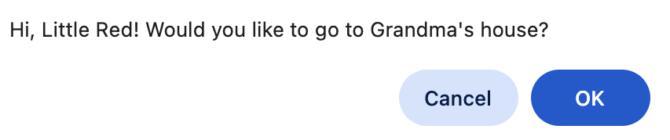

Katy Wells
software engineer, educator, maker of things
my projects
little red riding hood
html text adventure game
project 2
another incredible thing
project 3
this thing is completely mind-blowing
who am i?
I'm a software engineer with a passion for building tools that make the world more equitable, inclusive, and empowering—especially in education. After 25 years as a teacher and nonprofit leader, I transitioned into tech to solve real-world problems with thoughtful, human-centered code.
My background gives me a unique lens: I don't just focus on the technical challenges—I focus on the people I'm building for. I bring creativity, problem-solving, and a deep commitment to social impact into every project. Whether I'm pair programming, designing intuitive solutions, or contributing to mission-driven teams, I lead with empathy, curiosity, and purpose.
Outside of tech, you'll find me crafting intricate Halloween costumes from cardboard, hot glue, and imagination—turning everyday materials into something magical. I also love puzzles and learning how things work. For me, coding is another form of making—powerful, purposeful, and endlessly rewarding.
Let's build something that matters.